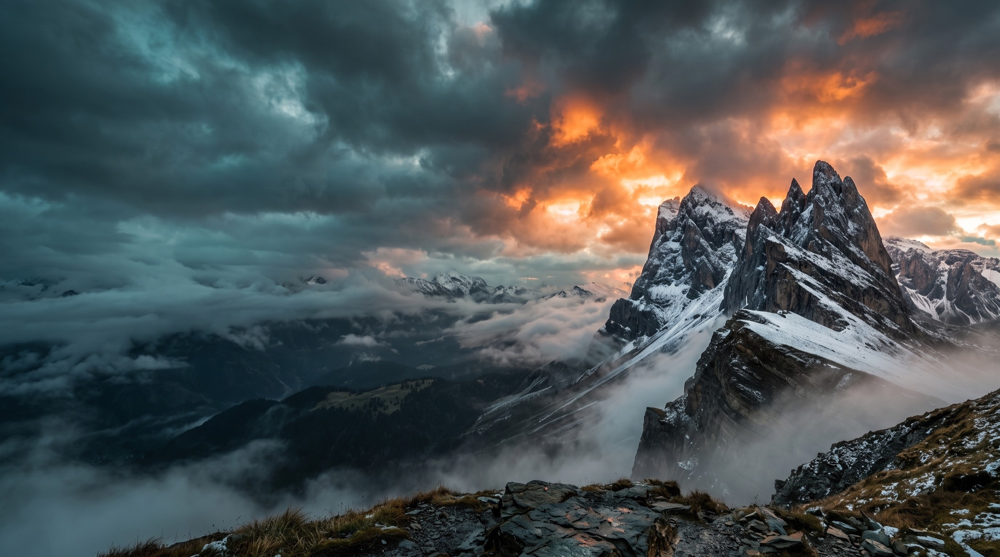

Fırtınalı Zirve
Fırtınalı Zirve: gri ve turkuaz tonlarında, doğa manzaralı 2K masaüstü duvar kağıdı. Reklamsız, üyeliksiz, ücretsiz indir.
- Çözünürlük
- 2752 × 1536
- Kalite
- 2K
- Cihaz
- Masaüstü · 16:9
- Boyut
- JPG · 0,8 MB
- Eklenme
- 3 Ekim 2026
- Lisans
- Ücretsiz, kişisel kullanım
Renk paleti
Nasıl arka plan yapılır?
- Windows: İndirdiğin dosyaya sağ tıkla → “Masaüstü arka planı olarak ayarla”.
- Mac: Dosyaya sağ tıkla → “Masaüstü Resmi Olarak Ayarla”.